Objective
To investigate the detection of JavaScript code embedded within a requested URL, determine whether the activity is indicative of a cross-site scripting (XSS) attempt or other malicious behaviour, assess its impact, and apply remediation steps to enhance web application security and prevent exploitation.
Investigation steps
Reviewed the alert generated by the system indicating Java script code was detecting in URL on a requet sent on 26/02/2022 by device with an IP of 112.85.42.13 to a web server of 172.85.42.13.
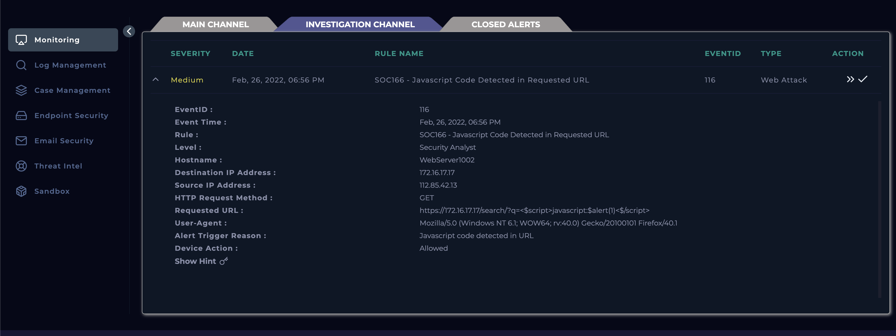
Created a case for the alert which is now visible in the Case Management module and started the playbook
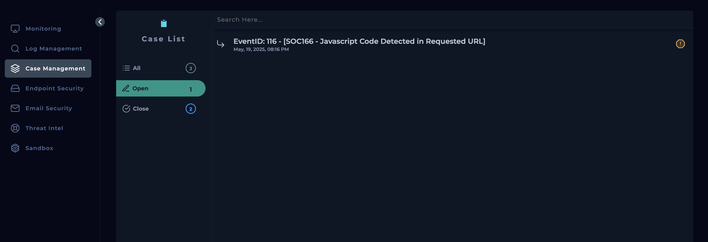
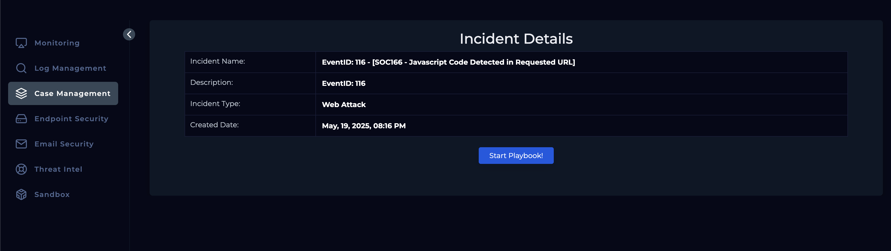
As mentioned in the playbook, to understand the incident better, reviewed the Log Management module by filtering results by the Source IP found in the alert and look for that particular date and time. This showed the full detail for the instance that triggered the alert, and by looking at this we can see port 443 was used (HTTPS) and the URL contains javascript code causing an alert.
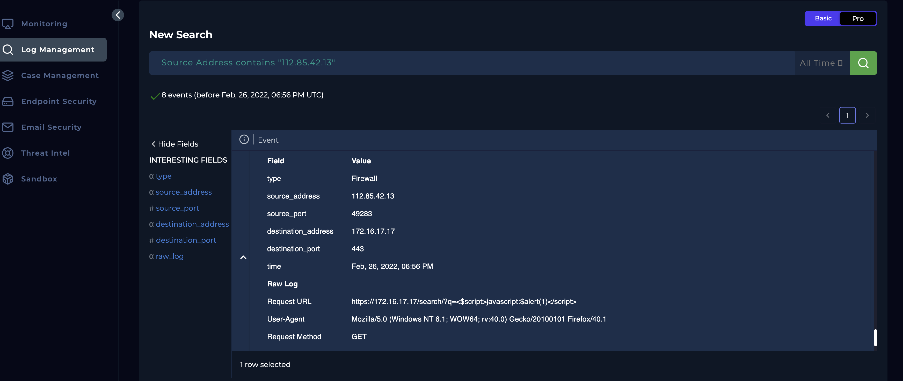
Headed over to the Endpoint Security module and searched for the Destination IP address to see which device was potentially involved in this attack.
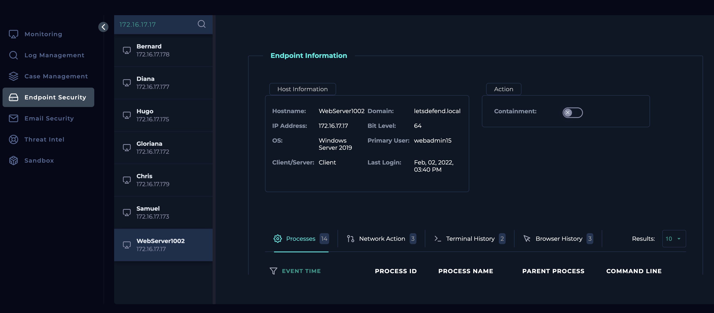
Using the Source IP address captured early, checked against Virus Total and AbuseIPDB
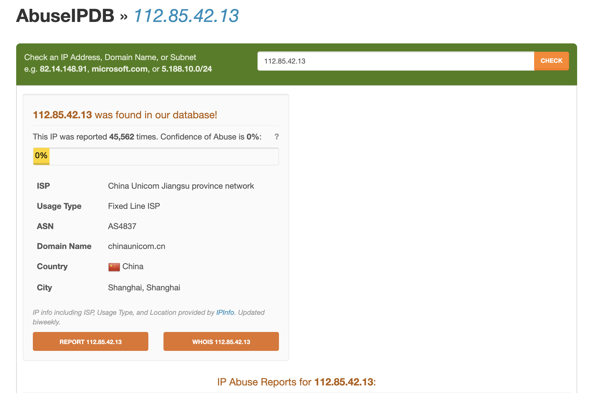
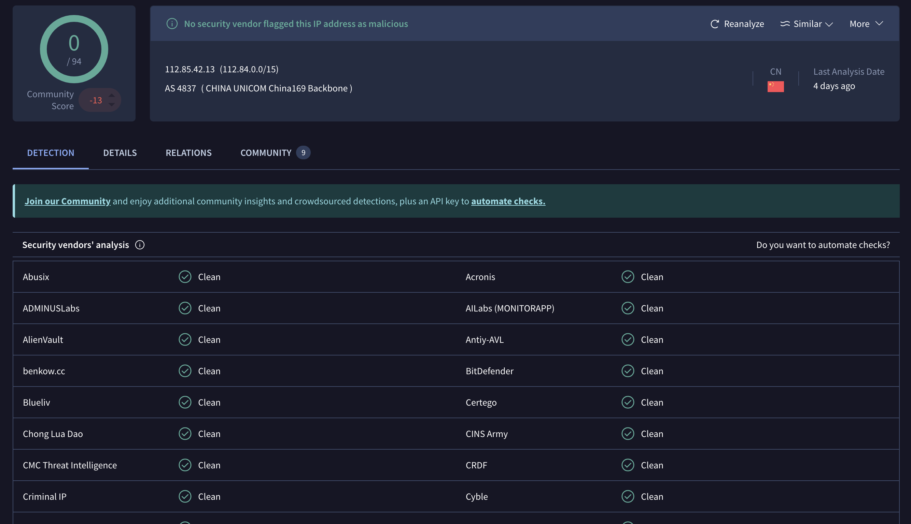
Checked the Email Security for any emails implying it was a planned test.
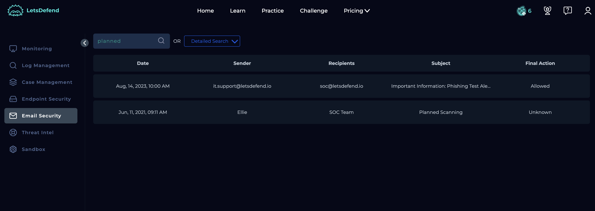
Returning to the Log Management we could see multiple request sent by the source and whereby most of the requests sent had Java script embedded in the URL whereby the HTTP response was 302 - Moved Temporarily.
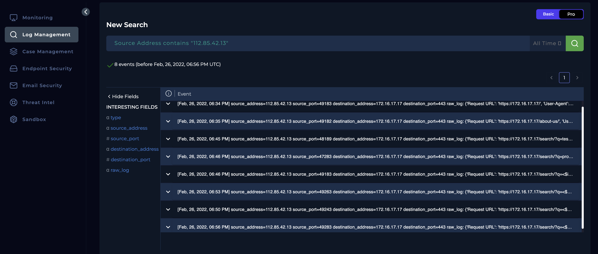
The web server was contained to prevent further escalation of the successful attack that was carried out.
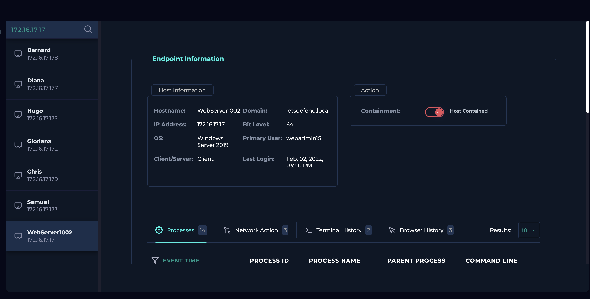
Escalated to tier 2 as the attack was successful to review the case and ensure malware is removed from the compromised device before removing the containment.
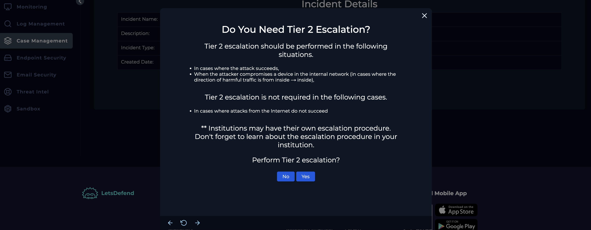
Analysis
An alert was triggered for "JavaScript Code Detected in Requested URL," indicating a potential cross-site scripting (XSS) attempt. Upon reviewing the logs, multiple HTTP requests containing embedded JavaScript code were observed originating from an external device using Mozilla Firefox. These requests targeted an internal web server hosted on LetsDefend on February 26, 2022, between 6:34 PM and 6:56 PM.
A review of internal email communications confirmed that there was no authorized or planned testing activity during this period. The source IP address was checked against VirusTotal and AbuseIPDB, with no security vendors flagging it as malicious and a 0% abuse confidence score respectively, suggesting it may not be a known threat actor.
Despite this, HTTP response code 302 was observed, implying the request was redirected—potentially indicating a successful exploitation or manipulation attempt. As a precautionary measure, the affected web server was contained to prevent further impact and facilitate a deeper investigation.
This incident is being escalated to Tier 2 for further analysis and response, as the attack appears to have been successful.
Key learnings
- Gained hands-on experience in analyzing alerts related to potential cross-site scripting (XSS) attacks, specifically through detection of JavaScript code in requested URLs.
- Learned how to correlate HTTP request logs with timestamps and user-agent information to trace the origin and nature of suspicious traffic.
- Developed skills in verifying the legitimacy of an incident by cross-referencing external threat intelligence sources like VirusTotal and AbuseIPDB.
- Understood the significance of HTTP response codes (e.g., 302) in determining potential attack success.
- Practiced incident response steps such as containment of a compromised server and escalating to Tier 2 for further investigation.